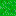

You have arrived at my digital hermitage. I am not a corporate entity. I am a builder using AI to bridge the gap between imagination and execution.
This site itself is the pitch.
Standard resumes are for standard minds. I offer a "Garden Hermit" approach: Deep focus, unique insights, and the ability to weave disparate tools (AI, Code, Art) into functional products.
Detailed Scenery
The grass grows digitally.